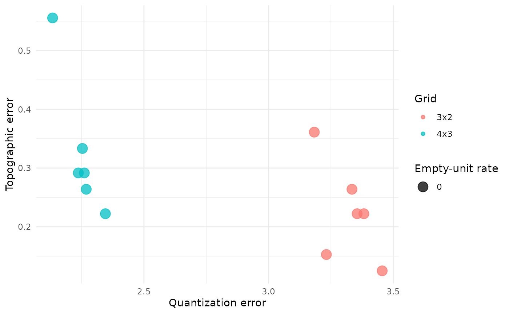
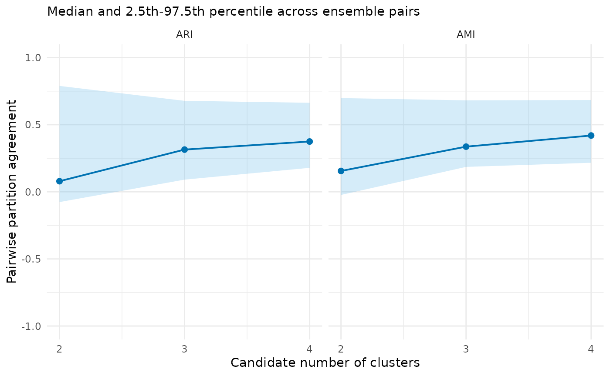
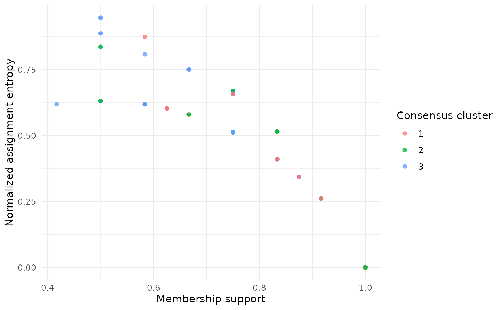
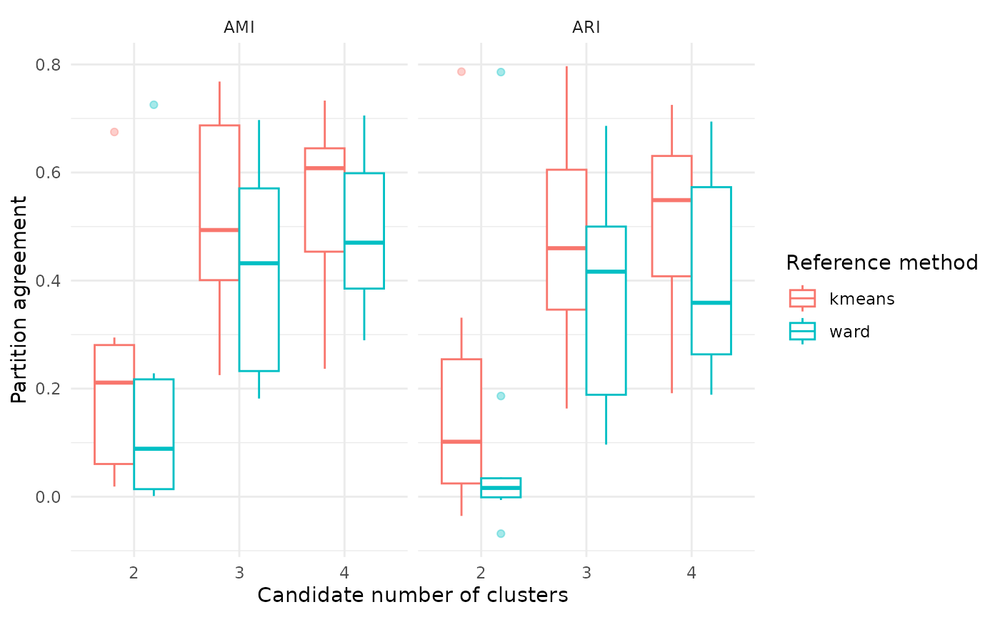

Start here: a complete SOM evidence workflow
Shaowen Ye
Source:vignettes/v01-getting-started.Rmd
v01-getting-started.RmdWhat this example does
This is the shortest complete route through SOMevidence.
We will:
- prepare data and a resampling design;
- fit a small SOM ensemble;
- inspect the map and candidate partitions; and
- compare the SOM partitions with two reference methods.
The example uses simulated classes, so we know how the data were generated. With field data, the underlying groups are unknown. A stable partition is evidence worth reporting, but it is not proof of an ecological type.
library(SOMevidence)
dat <- simulate_som_scenario(
"clusters",
n = 90,
p = 6,
seed = 10,
id = paste0("example_", seq_len(90))
)
dat
#> <som_data>
#> samples: 90
#> layers : 1
#> id source: provided
#> - environment: 6 variables, 0.0% missing
#> design : external_labelThe simulated class label is stored in metadata. It does not enter the SOM training matrix.
Describe the analysis before fitting
Rows are independent in this simulation, so ordinary subsampling is suitable. For repeated observations from sites, individuals or transects, resample whole groups instead. See the resampling tutorial for worked examples.
resamples <- som_resamples(
dat,
method = "subsample",
repeats = 3,
prop = 0.8,
seed = 20
)
spec <- som_spec(
grids = list(c(3, 2), c(4, 3)),
seeds = c(30, 31),
rlen = 40,
k = 2:4
)This design attempts 12 SOM fits: three subsamples, two grids and two random starts. The small budget keeps the example quick. It is not a default for a research analysis.
Run the workflow
workflow <- run_som_workflow(
dat,
spec,
resamples,
preprocess = som_preprocess(
"identity",
center = TRUE,
scale = TRUE
),
cross_models = c("kmeans", "ward")
)
workflow
#> <som_workflow>
#> SOM fits : 12 attempted; 12 succeeded; 0 failed; 0 warnings
#> candidate k : 2, 3, 4
#> consensus : 3 computed; 0 not_computed
#> - k=2: computed; complete=yes; assignment=100.0%; labels=100.0%; replicated=100.0%
#> - k=3: computed; complete=yes; assignment=100.0%; labels=100.0%; replicated=100.0%
#> - k=4: computed; complete=yes; assignment=100.0%; labels=100.0%; replicated=100.0%
#> cross-model : 18 expected; 18 succeeded; 0 failed; 0 warnings ; 100.0% success
#> - kmeans: 9 expected, 9 succeeded, 0 failed, 0 warnings, 100.0% success
#> - ward: 9 expected, 9 succeeded, 0 failed, 0 warnings, 100.0% success
summary(workflow)
#> <summary.som_workflow>
#> SOM success: 12 / 12
#> consensus : 3 computed; 0 not_computed
#> - k=2: computed; complete=yes; assignment=100.0%; labels=100.0%; replicated=100.0%
#> - k=3: computed; complete=yes; assignment=100.0%; labels=100.0%; replicated=100.0%
#> - k=4: computed; complete=yes; assignment=100.0%; labels=100.0%; replicated=100.0%
#> reference methods:
#> - kmeans: 9 expected, 9 succeeded, 0 failed, 0 warnings, 100.0% success
#> - ward: 9 expected, 9 succeeded, 0 failed, 0 warnings, 100.0% successPreprocessing is learned within each subsample. Assessment rows therefore do not influence the means or standard deviations used for training.
Read the results in order
Start with fit success and map diagnostics.
workflow$audit$grid_summary
#> grid xdim ydim n_fits median_quantization_error median_topographic_error
#> 1 3 x 2 3 2 6 3.344689 0.2222222
#> 2 4 x 3 4 3 6 2.257257 0.2916667
#> median_empty_unit_rate
#> 1 0
#> 2 0
plot(workflow$audit)
Quantization error, topographic error and empty-unit rate describe the map. None of them tells us whether a hard partition is reproducible.
Next, inspect the candidate values of k.
workflow$partitions$stability
#> k scope n_pairs n_partitions n_complete_partitions min_observed_clusters
#> 1 2 analysis 66 12 12 2
#> 2 3 analysis 66 12 12 3
#> 3 4 analysis 66 12 12 4
#> n_pairs_evaluable median_joint_n median_joint_coverage median_ari ari_q025
#> 1 66 58 0.6444444 0.07904953 -0.07647454
#> 2 66 58 0.6444444 0.31457897 0.09074610
#> 3 66 58 0.6444444 0.37472852 0.17858978
#> ari_q975 median_ami ami_q025 ami_q975
#> 1 0.7889482 0.1553512 -0.02331763 0.6984239
#> 2 0.6778272 0.3365075 0.18565508 0.6814412
#> 3 0.6634369 0.4193496 0.21635376 0.6839617
plot(workflow$partitions)
ARI and AMI measure agreement among repeated partitions. They are not classification accuracy. Read them together with the number of successful fits and the joint sample coverage.
Now look at sample-level support for one prespecified candidate. We
use k = 3 because this teaching simulation has three
generated classes.
consensus_k3 <- workflow$consensus$k3
consensus_k3$cluster_summary
#> cluster median_jaccard jaccard_q025 jaccard_q975
#> 1 1 0.5872865 0.3636364 0.9565217
#> 2 2 0.7198276 0.6129032 0.8928571
#> 3 3 0.5415282 0.1481481 0.8400000
plot(consensus_k3)
Low support or high assignment entropy points to uncertain membership. A consensus label is a summary of repeated assignments, not a probability that the label is correct.
Finally, compare the SOM partition with K-means and Ward.D2 on the same eligible analysis splits.
workflow$cross_comparison$summary
#> scope method k n_comparisons median_ari ari_q025 ari_q975 median_ami
#> 1 analysis kmeans 2 12 0.10169656 -0.03559160 0.7866490 0.21113188
#> 2 analysis ward 2 12 0.01616664 -0.06841977 0.7859206 0.08871479
#> 3 analysis kmeans 3 12 0.45990535 0.16323005 0.7968555 0.49353972
#> 4 analysis ward 3 12 0.41651517 0.09642750 0.6863293 0.43204196
#> 5 analysis kmeans 4 12 0.54891660 0.19152957 0.7251709 0.60803282
#> 6 analysis ward 4 12 0.35888232 0.18877108 0.6942901 0.47017371
#> ami_q025 ami_q975
#> 1 0.018744451 0.6750548
#> 2 0.001240258 0.7254310
#> 3 0.225046520 0.7683738
#> 4 0.181682547 0.6971771
#> 5 0.236738852 0.7331537
#> 6 0.289493696 0.7055366
plot(workflow$cross_comparison)
Cross-model agreement is useful triangulation. It should not be turned into a model ranking.
Use known labels only after fitting
Because this is a simulation, we can compare the k = 3
consensus with the generated labels. Those labels were not used for
training.
evaluate_external_labels(consensus_k3)
#> <som_external_assessment> (post hoc)
#> samples used: 90 of 90
#> label match : stored
#> ARI : 0.680
#> AMI : 0.676
#> interpretation: agreement, not classification accuracyIn a field study, a recorded category may itself be uncertain or answer a different biological question. Treat it as external evidence, not automatic ground truth.
What to save
Keep the following with any reported analysis:
- the input data and their provenance;
- stable sample identifiers and the sampling design;
- transformations, grids, seeds, iterations and candidate
kvalues; - warnings, failed fits and all evidence tables; and
- the package version and R session information.
packageVersion("SOMevidence")
#> [1] '1.2.1'
sessionInfo()
#> R version 4.6.1 (2026-06-24)
#> Platform: x86_64-pc-linux-gnu
#> Running under: Ubuntu 24.04.4 LTS
#>
#> Matrix products: default
#> BLAS: /usr/lib/x86_64-linux-gnu/openblas-pthread/libblas.so.3
#> LAPACK: /usr/lib/x86_64-linux-gnu/openblas-pthread/libopenblasp-r0.3.26.so; LAPACK version 3.12.0
#>
#> locale:
#> [1] LC_CTYPE=C.UTF-8 LC_NUMERIC=C LC_TIME=C.UTF-8
#> [4] LC_COLLATE=C.UTF-8 LC_MONETARY=C.UTF-8 LC_MESSAGES=C.UTF-8
#> [7] LC_PAPER=C.UTF-8 LC_NAME=C LC_ADDRESS=C
#> [10] LC_TELEPHONE=C LC_MEASUREMENT=C.UTF-8 LC_IDENTIFICATION=C
#>
#> time zone: UTC
#> tzcode source: system (glibc)
#>
#> attached base packages:
#> [1] stats graphics grDevices utils datasets methods base
#>
#> other attached packages:
#> [1] SOMevidence_1.2.1
#>
#> loaded via a namespace (and not attached):
#> [1] vctrs_0.7.3 cli_3.6.6 knitr_1.51 rlang_1.3.0
#> [5] xfun_0.60 otel_0.2.0 S7_0.2.2 textshaping_1.0.5
#> [9] clue_0.3-68 jsonlite_2.0.0 labeling_0.4.3 glue_1.8.1
#> [13] htmltools_0.5.9 ragg_1.5.2 sass_0.4.10 scales_1.4.0
#> [17] rmarkdown_2.31 grid_4.6.1 evaluate_1.0.5 jquerylib_0.1.4
#> [21] fastmap_1.2.0 yaml_2.3.12 lifecycle_1.0.5 cluster_2.1.8.2
#> [25] compiler_4.6.1 kohonen_3.0.13 RColorBrewer_1.1-3 fs_2.1.0
#> [29] Rcpp_1.1.2 farver_2.1.2 systemfonts_1.3.2 digest_0.6.39
#> [33] R6_2.6.1 bslib_0.12.0 gtable_0.3.6 tools_4.6.1
#> [37] withr_3.0.3 ggplot2_4.0.3 pkgdown_2.2.1 cachem_1.1.0
#> [41] desc_1.4.3Next, use the guided Shiny tutorial for an interactive introduction or the resampling tutorial to match the workflow to a real monitoring design.